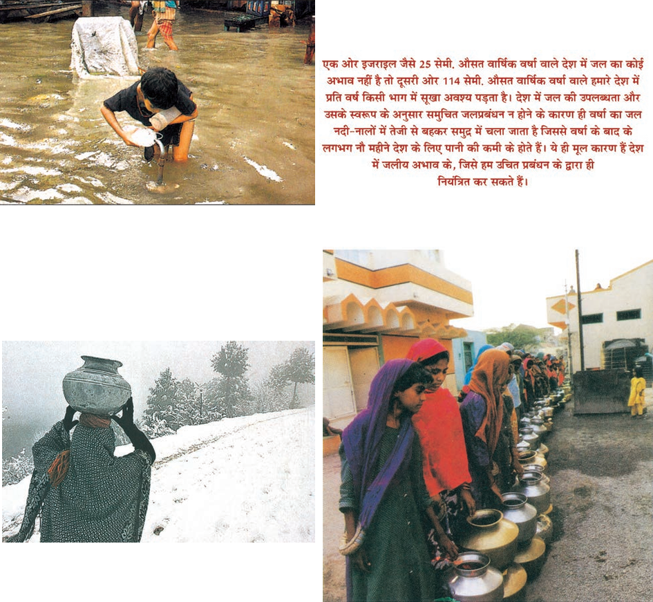
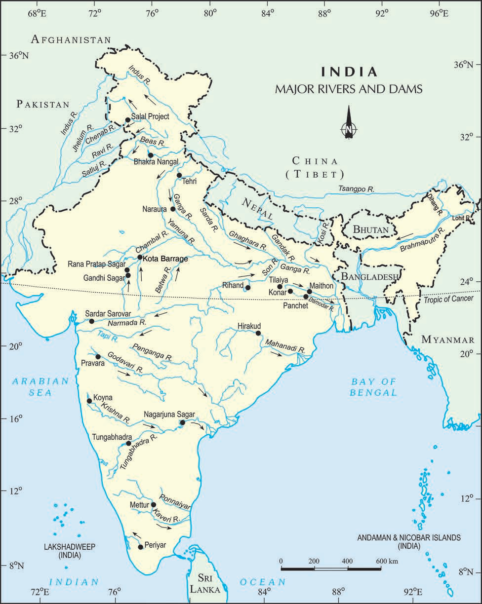
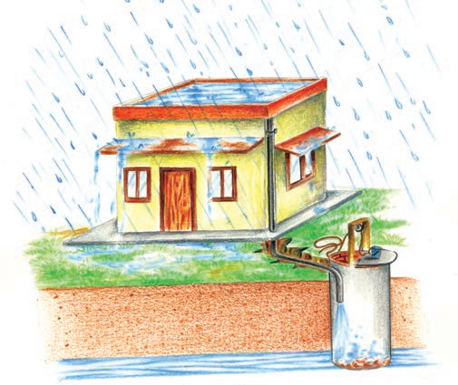
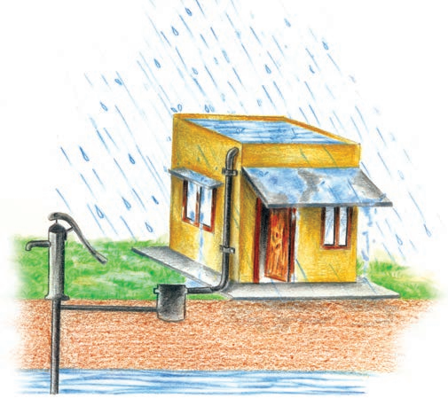
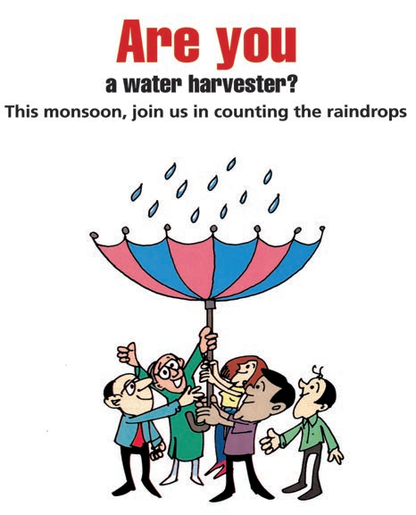
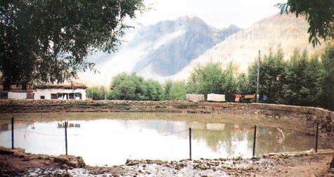
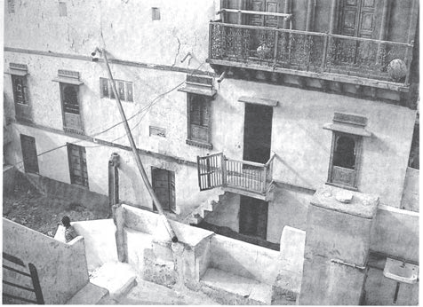
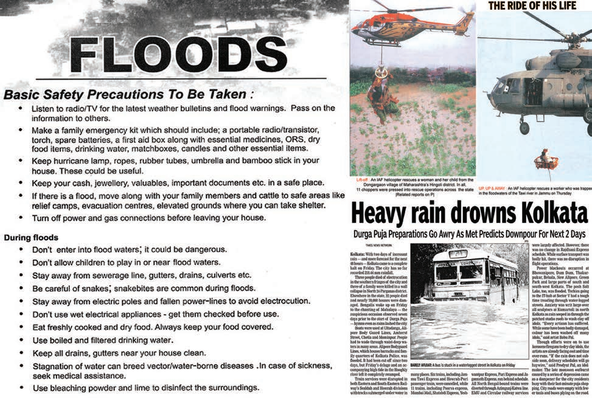
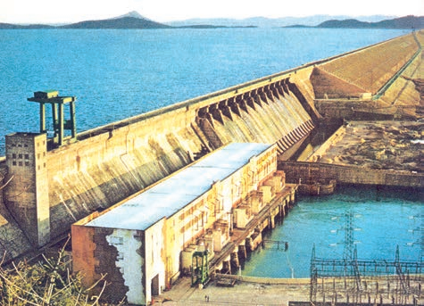
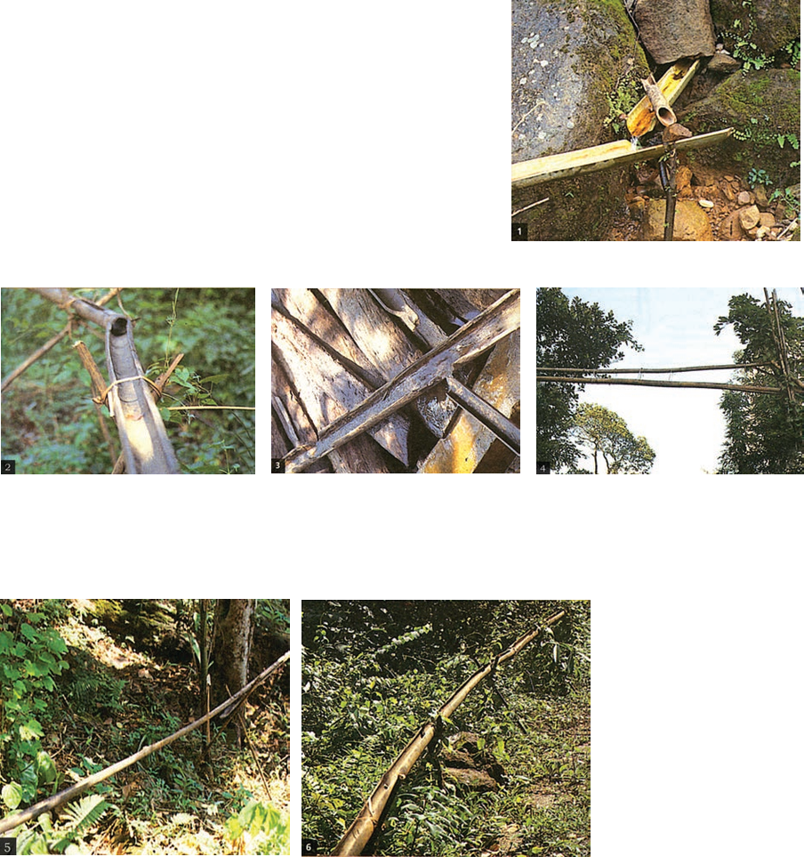

WATER RESOURCES
WATER SCARCITY AND THE NEED FOR WATER CONSERVATION AND MANAGEMENT
top-social-science-tb-1-1Causes of Water Scarcity
sub-social-science-ai-1-1-1The text explains that water scarcity arises from over‑exploitation, excessive use, and unequal access to water, despite the abundance of freshwater from precipitation, surface runoff, and groundwater.

Map showing major rivers, dams, and geographical features of India.

Map showing major rivers, dams, and geographical features of India.

Map showing major rivers, dams, and geographical features of India.

Map showing major rivers, dams, and geographical features of India.

Map showing major rivers, dams, and geographical features of India.

Map showing major rivers, dams, and geographical features of India.

Map showing major rivers, dams, and geographical features of India.
Impact of Population Growth on Water Demand
sub-social-science-ai-1-1-2Large and growing populations increase domestic and agricultural water demand, leading to over‑exploitation of water resources for irrigation and food production.
Agricultural Water Use and Irrigation
sub-social-science-ai-1-1-3Irrigated agriculture is the largest consumer of water; expanding irrigated areas for dry‑season agriculture over‑exploits groundwater, threatening food security.
Industrial and Urban Water Consumption
sub-social-science-ai-1-1-4Industrialization and urbanization increase water and energy demands; industries use large amounts of water and rely on hydroelectric power, further stressing freshwater resources.
Water Quality Issues and Pollution
sub-social-science-ai-1-1-5Even where water is abundant, pollution from domestic, industrial, chemical, pesticide, and fertilizer waste can render it hazardous, highlighting the need for quality management.
Conservation and Management Strategies
sub-social-science-ai-1-1-6The chapter emphasizes the necessity of conserving and managing water resources to safeguard health, food security, livelihoods, and ecosystems, and to prevent ecological crisis.

Rooftop Rainwater Harvesting System.
MULTI-PURPOSE RIVER PROJECTS AND INTEGRATED WATER RESOURCES MANAGEMENT
top-social-science-tb-1-2What are dams and how do they help us in conserving and managing water?
sub-social-science-tb-1-2-1This subtopic discusses the role of dams in impounding rivers and rainwater for later irrigation, electricity generation, water supply, flood control, recreation, and fish breeding, illustrating their multi‑purpose nature.

Fig. 3.2: Hirakud Dam
Classification of Dams
sub-social-science-ai-1-2-2Dams are classified according to structure, intended purpose, or height, and include features such as spillways or weirs that regulate water flow.
HYDRAULIC STRUCTURES IN ANCIENT INDIA
top-social-science-tb-1-3Sringaverapura Water Harvesting System
sub-social-science-ai-1-3-1In the first century B.C., Sringaverapura near Allahabad had a sophisticated water harvesting system that channeled flood water from the Ganga, demonstrating early hydraulic engineering.
Chandragupta Maurya Era Irrigation
sub-social-science-ai-1-3-2During Chandragupta Maurya’s reign, dams, lakes, and irrigation systems were extensively built, evidencing large‑scale water management in ancient India.
Later Historical Water Structures
sub-social-science-ai-1-3-3Examples include Bhopal Lake (11th century), the tank in Hauz Khas, Delhi (14th century), and irrigation works in Kalinga, Nagarjunakonda, Bennur, and Kolhapur, illustrating continued hydraulic development.

Bamboo Drip Irrigation System (200-year-old system in Meghalaya).